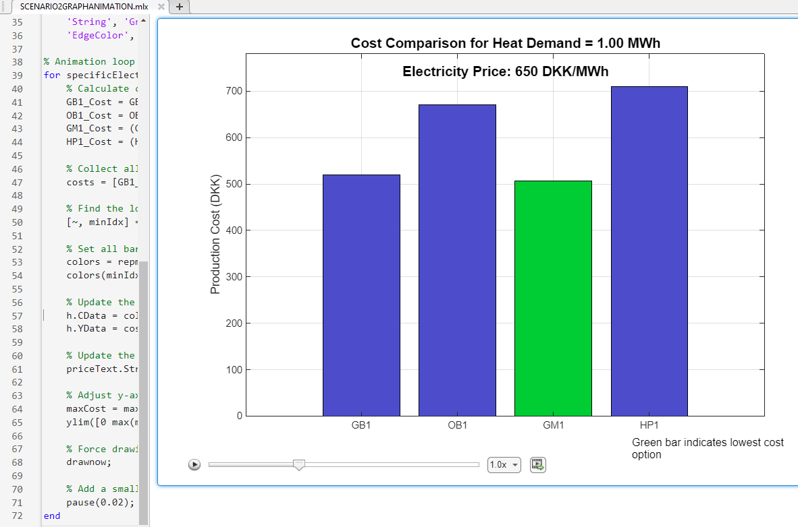
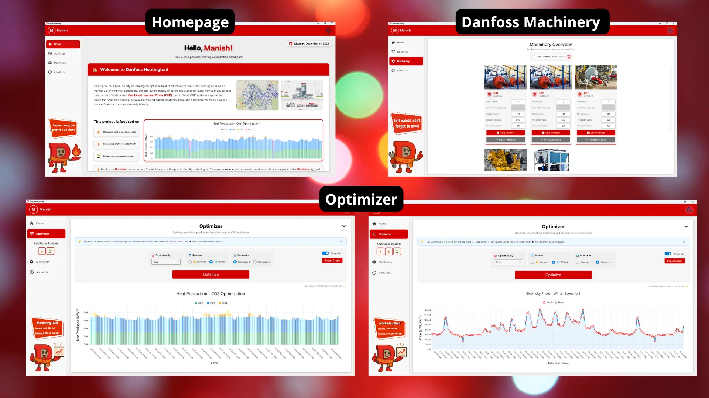
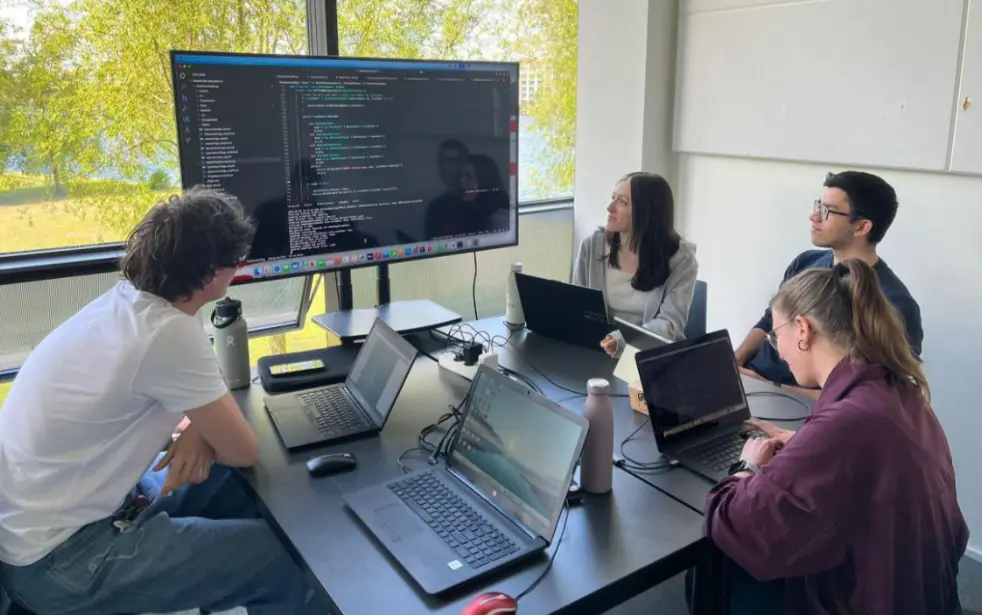

Danfoss Optimizer is a software solution developed as a 2nd-semester project at the University of Southern Denmark (SDU) for the Danish company Danfoss. It was developed by a 6-person group, built using C# and following strict software engineering principles.
The Challenge
The project addresses the inefficiencies of manual heat production scheduling for Heatington, a district heating system serving approximately 1600 buildings. The primary goal was to develop an automated system that optimizes the operation of various production units, including heat-only boilers and combined heat and power (CHP) units, to meet hourly heat demand at the lowest net cost while considering environmental impact.
The Solution
The application processes dynamic data, such as hourly electricity prices, heat demand, and CO2 emissions, to generate optimized production schedules. It allows operators to visualize complex data and make informed decisions based on real-time constraints.
Optimization Scenarios & Verification
Scenario 1: Simple heat production using only boilers, where cost is largely dependent on fuel.
Scenario 2: Complex production with CHP units where selling electricity offsets costs, requiring optimization.
Scenario 2 needed mathematical formulas because dynamic electricity prices make the cost function non-linear, unlike Scenario 1. We verified our optimization logic by creating MATLAB simulations before application coding.
Verification Files:
Scenario2Graph: Showcases machinery cost optimization for heat demand (allows manual entry).Scenario2GraphAnimation: Visualizes efficiency using Danfoss data (electricity price, heat demand) to verify the formula over time.

System Architecture
To ensure scalability and maintainability, the system is divided into five distinct modules:
Asset Manager: Handles static configuration data for all production units.Source Data Manager: Processes time-series inputs like prices and demand.Optimizer: The core engine that calculates the most efficient schedule.Result Data Manager: Stores and manages the output of the optimization.Data Visualization: Presents the results through interactive graphs and charts.
Application Interface
The application features a user-friendly interface designed for efficient operation, allowing users to visualize complex data and optimization results:

Technical Approach
The project was built with a strong focus on code quality, using C#, the Avalonia framework for the UI, and the MVVM pattern while adhering to SOLID principles. We utilized LiveCharts2 for visualization and followed Agile Scrum methodologies to manage the development process.

Project Report
For a detailed look at the problem analysis, design choices, and implementation details, you can view the full project report.